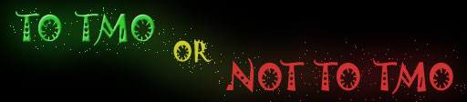
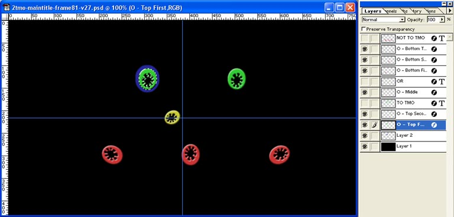
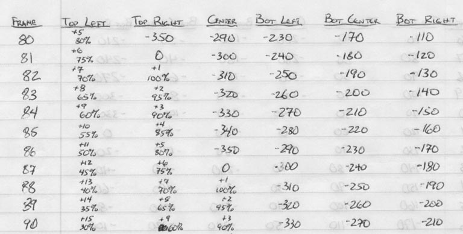
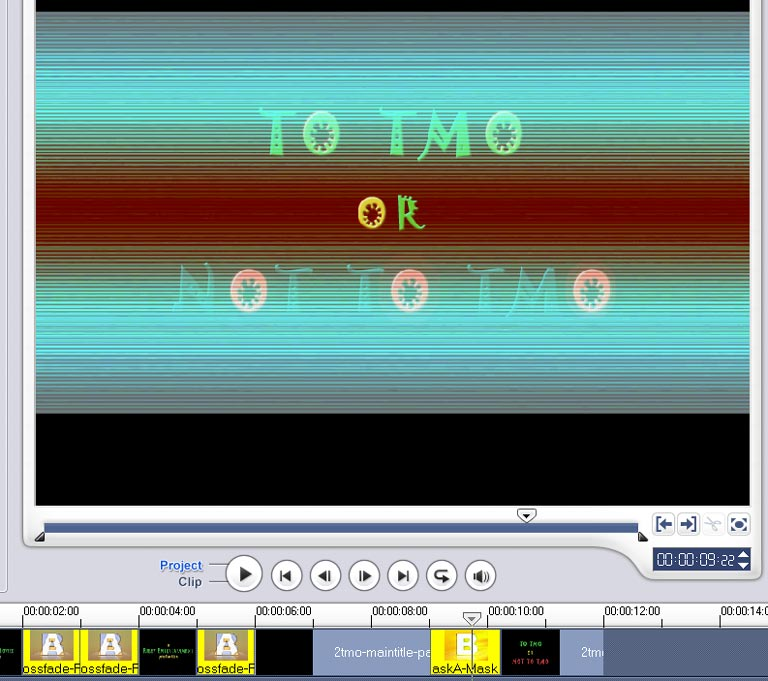

|  |
| Home | The Movie | Cast & Crew | Soundtrack | How-To Guide | Screenshots | Riley Entertainment |
Spinning "O"s
The opening and closing "To TMO or Not To TMO" title, with the letter O's that spin, was done frame-by-frame in Adobe Photoshop. I first used "guides" to get the text centered and spaced properly on the canvas. Then I added the letter O's as their own layers and positioned them on top of the corresponding O's in the title. Once this base image was ready, I created a copy for each frame of animation.
I wrote out notes for every frame of animation, indicating the angle of rotation I would need to make the spinning animation work. I also had a blue "outline" effect once the O's stopped spinning. This was achieved by selecting the corresponding O (CTRL+Left Click on layer), and using the Select -> Modify -> Expand menu option.
I created each frame, and saved it as both a PSD (Photoshop format) and TGA (Targa format) image. The TGA image was first resized to 512x256, to prepare it for conversion to DDS (Direct-Draw Surface format) images. I then used the DDS Converter application to perform the conversion (using DXT1 format) in a single batch.
Once the spinning animation was complete, I converted it into an AVI (Audio-Video Interleave) movie file using VirtualDUB. I took this into Ulead VideoStudio, and used a Mask transition between this animation and the full title image.
This particular animation was enhanced for the high-resolution version of the film, running at 30 frames per second. The high-resolution images were kept in their original 768x432 size, to maintain their image quality. Animated overlays for the online version run at 10 frames per second, which is okay but does come out a little bit choppy.

Photoshop image and its layers.
This is frame 81 for the high-resolution version, which corresponds to frame 27 for the online (animated overlay) version.

Animation notes.

Ulead VideoStudio film timeline, showing the Mask transition between the spinning O animation and the full title image.